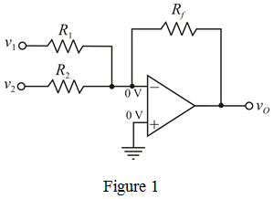
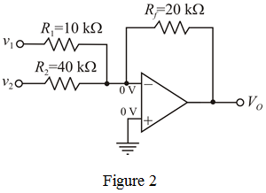

Equate equations (1) and (2).
 …… (3)
…… (3)
And,
…… (4)
The current flowing through resistors,  and
and  is
is  and voltage applied to both the terminal is
and voltage applied to both the terminal is  .
.
The current through resistor  is,
is,
The output voltage expression is,
…… (1)
According to output voltage expression, the circuit needs inverting summing amplifier with two inputs. Consider the following two input summing amplifier.

The op-amp shown in Figure 1 is ideal, so the voltages at inverting and non-inverting terminals are same and equal to zero.
Apply Kirchhoff’s current law at inverting terminal of op-amp.
…… (2)
Equate equations (1) and (2).
…… (3)
And,
…… (4)
The current flowing through resistors, and is and voltage applied to both the terminal is .
The current through resistor is,
Recall equation (3).

Substitute  for
for  in the equation.
in the equation.
Now, recall equation (4).
Substitute  for
for  in the equation.
in the equation.
The designed circuit with resultant resistor values is shown in Figure 2.
